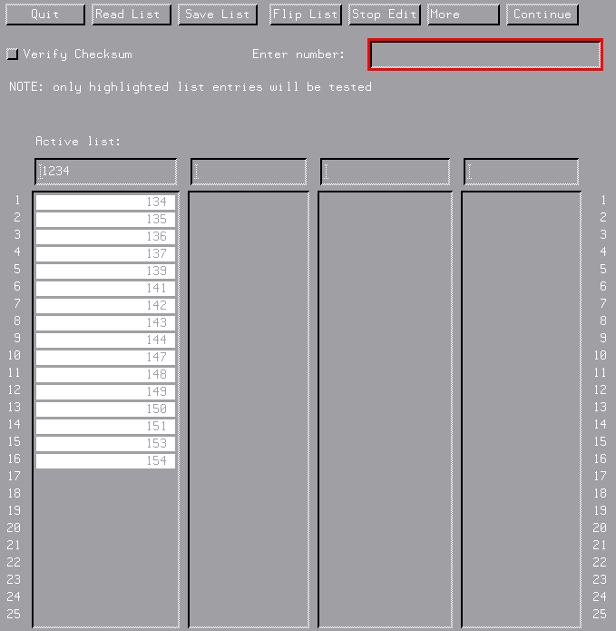

Using the Wafer Selection Screen
Depending on your application you may need to use the wafer selection screen, see Figure8 below.

You can use the wafer selection screen to define a set of wafers to be tested by an automatic wafer prober. You can define up to four wafer cassettes, with up to four (lot) numbers (in other words, you can have up to four active cassettes with only one lot number, or four lot numbers, one for each cassette). All wafers that you want to test within a particular cassette must be highlighted.
The buttons along the top of the screen define what is possible with the wafer selection screen.
Quit
forces SmarTest back to the level just before you entered the Wafer Selection Screen. If you are using the default wafer_auto application model file, for example, the Line Dialog screen appears asking you to enter a number of wafers.
Read List
when you select this, SmarTest executes a script (which you must specify) that reads a file containing a list of your wafers for one cassette. This feature can be used in conjunction with a laser number-reader that can create the file. Up to four lists can be read, corresponding to the four cassette browsers. See Reading a List of Wafers later.
Save List
saves the list for the single cassette you have activated (by clicking the appropriate Active list: field).
Flip List
inverts the order of the active list. This is useful if your wafer handler reverses the wafer order in the cassette as it test the wafers.
Edit List
brings up the Enter number edit box.
Features of the edit box:
- keying in an unused number and pressing return, adds this number to the end of the list
- you can insert unused wafer numbers at other positions in the list using the @ character. For example 10@4 inserts the wafer number 10 at position 4 of the list (however, wafer 10 must not already exist).
Stop Edit
appears while the edit box is displayed. When pressed it reverts to the Edit List button.
More
reveals a second set of buttons
Select
SmarTest first saves all the cassette lists (in the file(s) specified in the GET_WAFERLIST call, in the application model) and then begins testing the wafers.
Make Seq
makes a list of consecutive wafer numbers in a cassette. If you use the default wafer_auto application model file, the number of wafers is what you specified in the earlier Line Dialog Screen.
All On
selects (shown highlighted) all the wafers in a cassette.
All Off
unselects all the wafers in a cassette.
Clr List
erases all the wafer numbers in the active cassette.